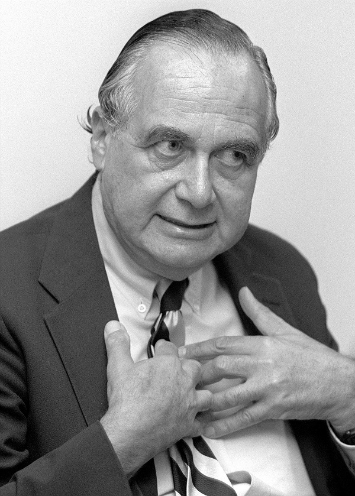
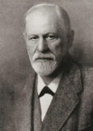

|
Multiple Choice
Multiple Choice
Multiple Choice
Multiple Choice
Multiple Choice
Multiple Choice
Multiple Choice
Multiple Choice
What methods do they employ to gather the information they need?
|
|
|
Diffusion the spread of a cultural trait from one society to another through social contract (ex. Through trade, migration, war, food - the sushi trend) |
Acculturation the process of contact, exposure, and exchange of ideas between different cultures that result in adaptations and changes in both groups |
Cultural change occurs within a framework of three levels: infrastructure, structure, and superstructure.

Marvin Harris (1927 - 2001) Cultural Materialism
John B. Watson (1878-1958)
B.F. Skinner (1904-1990)

Sigmund Freud (1856-1939)
Accordion
Period: 1880-present
Typical Questions:
Central Approach:
Period: 1890-1930
Typical Questions:
Central Approach:
|
SUPER-STRUCTURE
STRUCTURE
INFRASTRUCTURE
|
Accordion
Period: 1930-1960
Typical Questions:
Central Approach:
Period: 1970-present
Typical Questions:
Central Approach:
|
Psychology and Social Change
|
There are two major schools of thought in psychology dealing with a person’s thoughts and behaviors. They are aptly summarized below:
|
Schools of Thought in Psychology |
What’s the big idea? |
Theorist |
|
Learning theory |
Learning can alter the way an individual interprets the world around a person and can lead to permanent behavioral changes. Behaviorism is a theory within this school of thought. Certain behaviors are based on childhood experiences and these behaviors are both predictable and modifiable. |
John B. Watson (1878-1958)
(1904-1990) |
|
Psychoanalytic theory |
Understanding the conscious and unconscious parts of the mind to change behaviors and motivations. The inability to balance both parts of the mind can lead to frustration and may affect behavior negatively. Human development is determined by early events in childhood. |
Sigmund Freud (1856-1939) |
FEMINISM, STRUCTURAL FUNCTIONALISM & MARXISM
Tabs
Dorothy E. Smith (1926-present)
Karl Marx (1818-1883)
Emile Durkheim (1858-1917)
Talcott Parsons (1902-1979)
Accordion
Cognitive Consistency
Cognitive Dissonance
Thomas Kuhn (1922-1996) popularized the term “paradigm” which refers to a term or model.
Levels of Analysis in Sociology: Macrosociology
Some examples of paradigm shift:
Sociology is the study of human behavior. It refers to social behavior, society, patterns of social relationships, social interaction, and culture that surrounds everyday life.
Anthropologist is a scientist engaged in the practice of investigating the structure of groups, organizations, and societies and how people interact within these contexts.
Studying Social Change: Psychology
Accordion
Learning theory encompasses various psychological perspectives and frameworks that seek to understand how individuals acquire knowledge, skills, behaviors, and attitudes. One prominent aspect of learning theory is behaviorism, which emphasizes observable behaviors and the role of reinforcement in shaping them.
This perspective posits that behaviors are learned through interactions with the environment, and that consequences, whether positive or negative, influence the likelihood of those behaviors recurring. Another key concept within learning theory is cognitive constructivism, which focuses on the active construction of knowledge by individuals through mental processes such as perception, memory, and problem-solving.
Constructivist approaches highlight the importance of learners' prior knowledge, social interactions, and personal experiences in shaping their understanding of new information. Additionally, social constructivism emphasizes the social and cultural context in which learning occurs, highlighting the role of social interactions, collaborative learning environments, and cultural influences in shaping individuals' learning experiences.
Psychoanalytic theory, developed by Sigmund Freud, represents a comprehensive framework for understanding human personality development, motivation, and behavior. Central to psychoanalytic theory is the notion of the unconscious mind, which comprises thoughts, desires, and memories that are inaccessible to conscious awareness but nonetheless influence behavior.
Freud proposed that human behavior is determined by unconscious conflicts and desires, particularly those related to instinctual drives such as aggression and sexuality. According to psychoanalytic theory, personality is structured into three components: the id, ego, and superego, each of which operates according to distinct principles and functions.
The id is the primitive, instinctual part of the personality that seeks immediate gratification of desires, while the ego mediates between the id, superego, and external reality, striving to satisfy instinctual drives in socially acceptable ways. The superego represents internalized societal norms and moral values, exerting pressure on the individual to conform to moral standards.
Psychoanalytic therapy, also known as psychoanalysis, aims to bring unconscious conflicts and desires into conscious awareness through techniques such as free association, dream analysis, and transference, thereby facilitating insight and psychological healing.